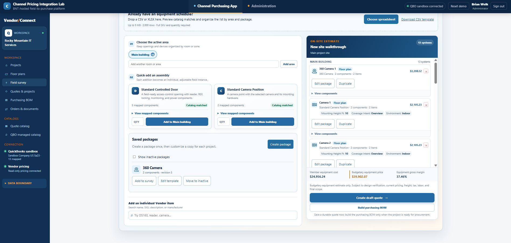
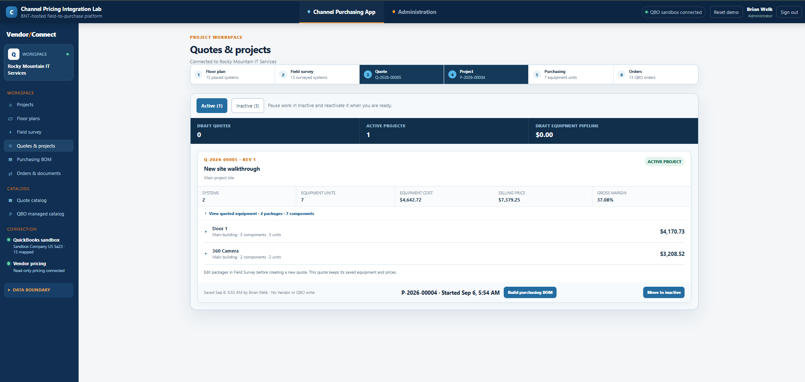
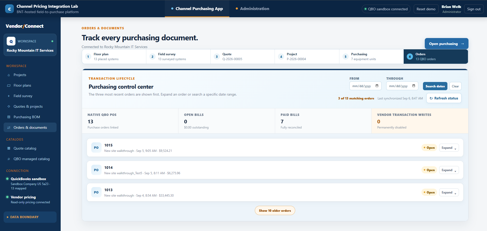

Field-to-purchase integration
Channel Pricing Integration Lab
An API-driven workspace that carries a system design from floor plan and field survey through quoting, purchasing, and accounting reconciliation.
- Role
- Product designer and full-stack developer
- Platform
- Python, Flask, REST integrations, and QuickBooks Online sandbox
- Portfolio data
- Demonstration project, sandbox accounting records, and read-only vendor pricing

The challenge
Keep design, pricing, and purchasing aligned.
Complex field projects often begin with drawings and notes, then move through separate estimating, catalog, purchasing, and accounting tools. Re-entering the same equipment at each stage introduces delays, inconsistent quantities, and pricing errors.
The workflow also needs firm boundaries. Vendor pricing must remain read-only, while accounting transactions should be created only inside the authorized customer sandbox after every line has been reviewed.
The solution
One traceable workflow from drawing to document.
I designed the application around a six-stage project lifecycle. Systems placed on a floor plan become editable field-survey packages, quoted equipment, a controlled purchasing BOM, and reconciled accounting documents.
- Visual floor-plan placement for cameras, controlled doors, readers, and cable runs
- Reusable equipment packages with room-level quantities and installation details
- Catalog matching and margin-aware pricing inside the estimating workflow
- Saved quotes and projects that preserve equipment counts and prices
- Purchasing BOM controls for vendor choice, procurement treatment, and item mapping
- Purchase-order and bill tracking with vendor transaction writes permanently disabled
My contribution
Workflow architecture, interface design, integrations, and safeguards.
I translated the operational process into a connected product experience, including the data model, staged workflow, visual takeoff tools, catalog matching, pricing logic, project handoffs, and document status views.
The demonstration uses a QuickBooks Online sandbox and enforces a read-only boundary for upstream vendor pricing. The public case study does not expose credentials, private API details, or any employer-specific implementation.
Product walkthrough
Four stages of a connected project lifecycle
These screens show a demonstration project in the sandbox environment. Vendor pricing is read-only, and the public case study omits supplier catalog and line-level purchasing screens.



Portfolio note